ZZ1 PROJET SEMAINE 1
Table des matières
1. Projet Individuel
1.1. Louis
1.1.1. Z Fenetre
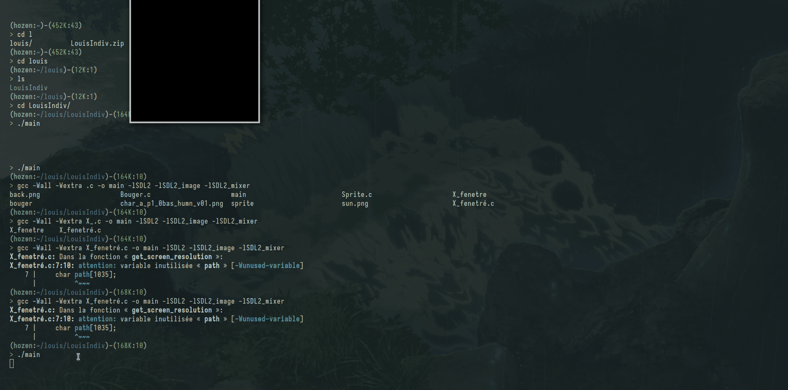
1.1.2. Carré Fusion
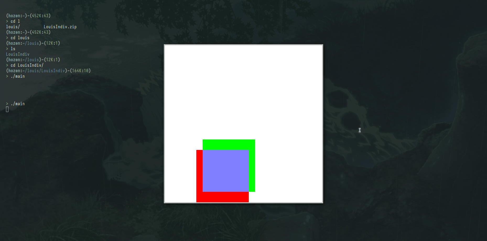
1.1.3. Sprite
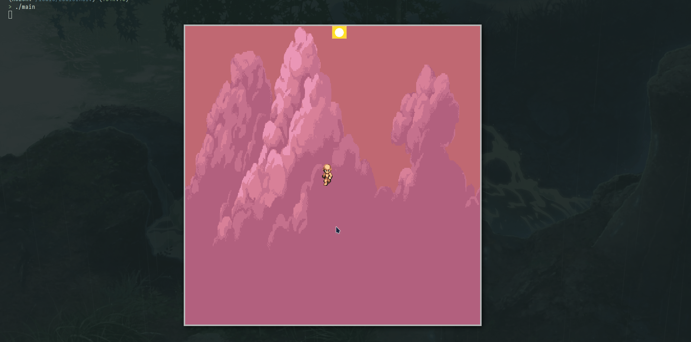
1.2. Thibault
1.2.1. Fenetre Piège
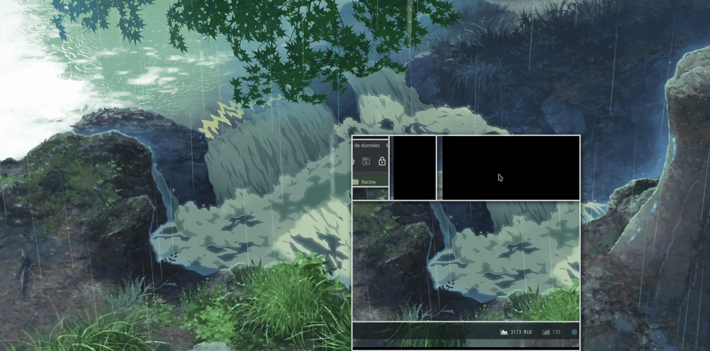
1.2.2. Rectangle Latéraux Fusion
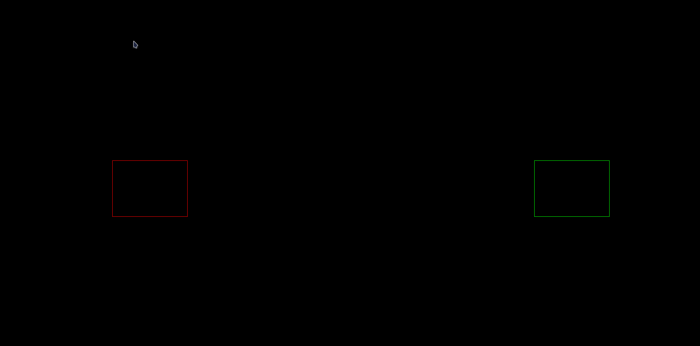
1.2.3. Super Mario Frod
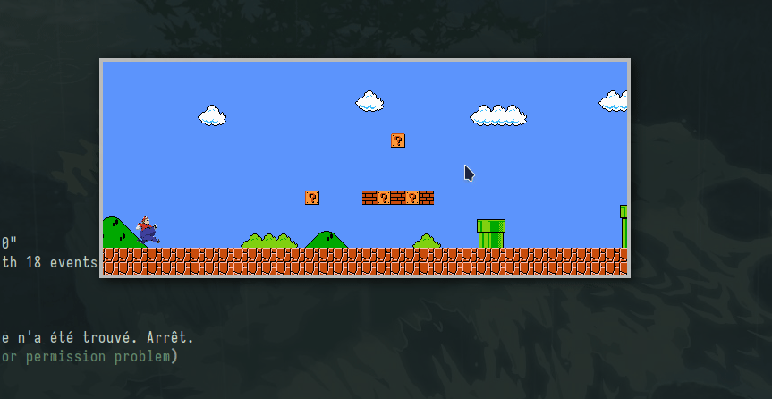
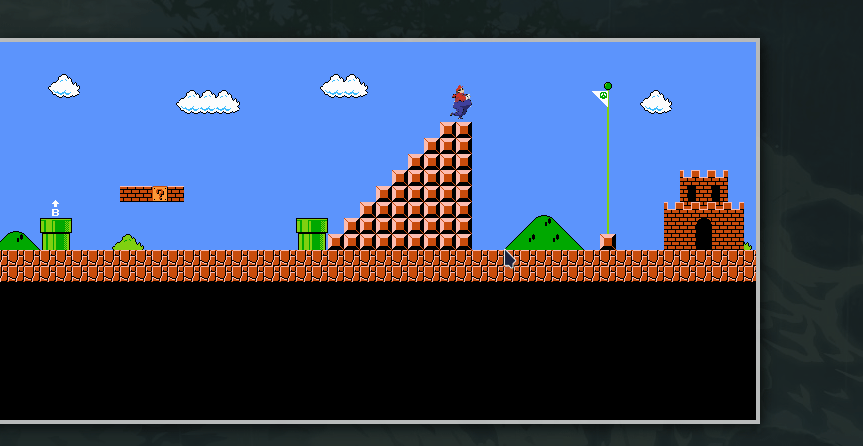
1.3. Enzo
1.3.1. Explosion
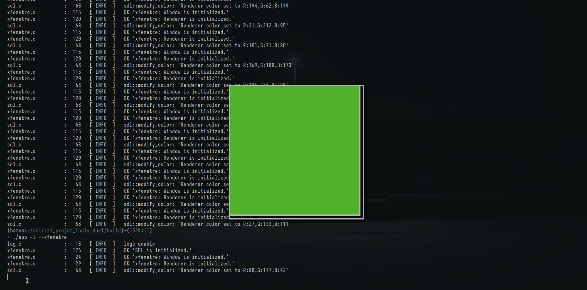
1.3.2. Simulation Vent
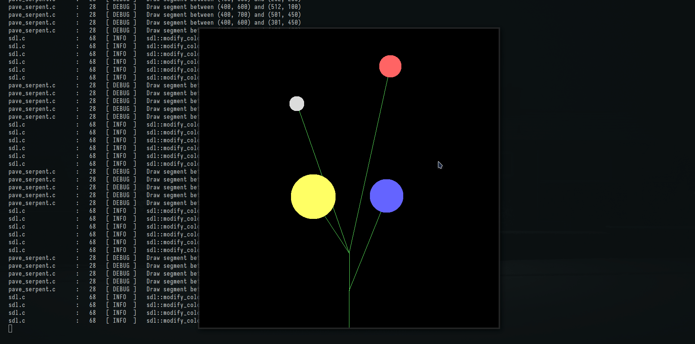
1.3.3. Parallax + animation voiture
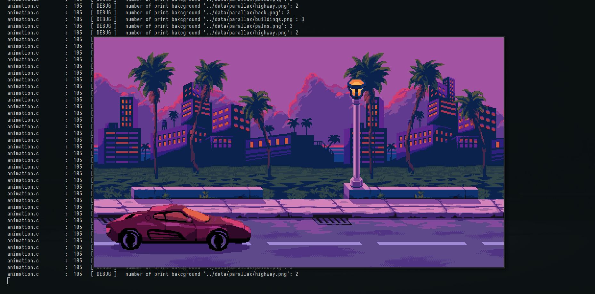
2. Problemes du Voyageur
2.1. Présentation
L'énoncé du problème du voyageur de commerce est le suivant : étant donné n villes et les distances entre toutes les paires de villes, trouver un chemin de longueur totale minimale qui passe exactement une fois par chaque ville et revienne à la ville de départ.
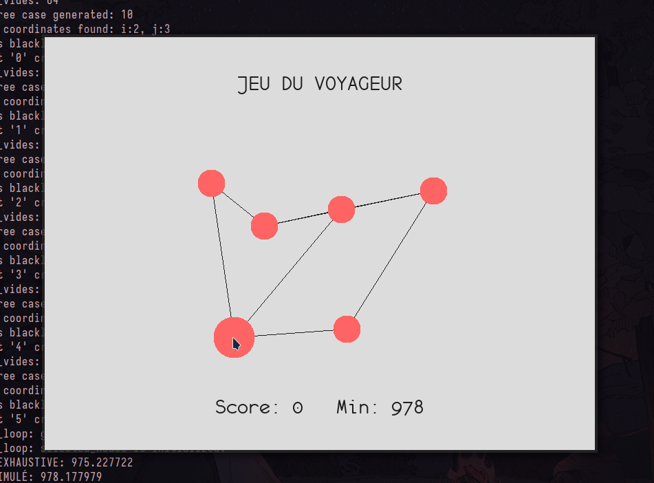
2.2. Floyd Warshall
Sortie : matrice, des plus courtes distances Entrée : graph, graph qui contient les points et distances initialisées Var : matrice, des plus courtes distances Initialisation matrice = +∞ FONCTION floyd_warshall (graph) | allocation de la matrice | initialisation de celle ci avec les distances des arcs existants | | POUR k de 0 a la taille de la matrice FAIRE: | | POUR chaque cellule de la matrice FAIRE: | | | SI le chemin passant par k entre les deux coefs de la matrice est plus court que celui stocké ALORS | | | | On met a jour la distance avec celle de ce nouveau chemin | | | FSI | | FAIT | FAIT | | retourner matrice FIN
2.3. GLOUTON EXHAUSTIVE
Principe: Prendre le meilleur à chaque itération
Sortie : distance euclidienne cycle minimum Entrée : tableau distance Floyd Warshall, nb_sommet Var : tableau visitée , case = 0 non visité sinon 1 Initialisation dist_min_trouve = +∞ glouton_exhaustive : | | POUR chaque sommet du graphe : | | FAIRE jusqu'à tous les sommets sont visités | | | aller au prochain sommet le moins loin en le marquant comme visité en s'aidant de la matrice de floyd W, | | | ne pas oublié de revenir au depart pour le dernier sommet | | |_FIN | | regarder si la distance du cycle est plus petite que dist_min_trouve, si oui la modifier | |_FAIT | | retourner dist_min_trouve | FIN ALGO
2.4. RECUIT SIMULÉ
Principe: Prendre le meilleur voisin ou si il est moins bon le garder avec une probabilité qui diminue au cours du temps
FONCTION resolution_recuit_simulé(distance,taille) | initialisation des parametre; [temperature,taux...] | initialisation d'une solution; [0,1,2,....] | | TANT QUE tempertaure>seuil FAIRE | | mélange la solution | | compare cette nouvelle solution | | SI nouvelle solution est meilleur ou avec une probabilité fonction de la temperature ALORS | | | on met a jour la dist et la solution minimales | | FSI | | met a jour la temperature | FAIT | | libere les tableaux | | retourne la distance FIN ALGO
2.5. COLONIE DE FOURMI
2.5.1. Colonisation de fourmi
Constante : MAX_JOUR = 100, EVAP = 0.5, Q = 100 (qtt phéromone)
Sortie : tableau fourmi_distance (chemin) et dist_min
Entrée : tableau distance Floyd Warshall, nb_sommet
Var : tableau 2D de phéromones [i][j] = i fourmi , j = l'arête, case = 1 (arbitraire)
: tableau 2D de visibilitées [i][j] = IDM, case = inverse de la distance
Initialisation dist_min_trouve = +∞
DEBUT ALGO
colonie_de_fourmi :
|
| TQ nb_jour actu < MAX_JOUR :
| | Pour chaque fourmi :
| | | construire le chemin qu'emprunte la fourmi en fonction des phéromones et des visibilités
| | | calcule de la distance
| | | la sauvegarde si elle est plus petite que celle qu'on a trouvé précédemment
| | |_ fin
| |
| | mise a jour tableau des phéromones
| |_fin
|
| retourne le chemin construit minimal + la distance
|
FIN ALGO
2.5.2. Mise à jour des phéromones des fourmis
Entrée : distance de chaque parcours de fourmi Entrée-Sortie : tableau de phéromone MAJ DEBUT ALGO maj_phéromone : | pour chaque arrete : | | calcule évaporation (phero[i][j] *= (1-EVAP)) | | Pour chaque fourmi passé par l'arête | | | phero[i][j] += Q / distance_fourmis (+ la fourmi a fait un grand parcours, + la quantité de phéromone est faible) | | |_fin | |_ fin | FIN ALGO
2.5.3. Calcul des probabilités de transition entre sommets
Constantes : T_PHERO 5, T_DIST 1 calcul probabilité de transition d'un sommet connu à un sommet j | | poba[j] = proba pour passer au sommet j | | proba[1] = (phero[1]^(T_PHERO) * (1/dist[1])^(T_DIST)) / sum(proba) | | proba[2] = (phero[1]^(T_PHERO) * (1/dist[1])^(T_DIST) + phero[2]^(T_PHERO) * (1/dist[2])^(T_DIST)) / sum(proba) | | ..... | | tire la branche avec random FIN ALGO
2.6. ALGO GENETIQUE
Constantes : ITER_MAX = 100 (nombre maximum d'itérations), MUTATION_RATE = 0.1 (taux de mutation) Données : matrice des distances Floyd-Warshall Retour : meilleur individu trouvé DEBUT ALGORITHME Créer une population initiale et une nouvelle population en mémoire. Initialiser aléatoirement des individus dans la population. TANT QUE (itération < ITER_MAX) FAIRE : | Trouver le meilleur individu dans la population (celui ayant parcouru le cycle le plus court). | Mettre à jour la meilleure solution si nécessaire. | | Pour chaque nouvel individu dans la nouvelle population : | | Sélectionner deux parents aléatoirement dans la population. | | Générer un nouvel individu (child) en effectuant un croisement entre les deux parents | | Appliquer une mutation à l'individu avec une probabilité de MUTATION_RATE. | |_ Fin Pour | | Remplacer l'ancienne population par la nouvelle population. | Générer une nouvelle population aléatoirement. | | Incrémenter le compteur d'itérations. _ Fin TQ FIN ALGORITHME
2.7. Structure du code
2.7.1. build
Dossier qui contient le Makefile ainsi que la construction des dossiers correspondant à chaque package contenant les fichiers objets .o et les fichiers de dépendances .d
2.7.2. src
1.1 graph
Contient la structure d'un graph.
Contient la structure de la représentation SDL d'un graph.
Contient toutes les fonctions associées aux graphes.
1.2 resolution
Contient les codes des algorithmes de résolution (fourmi, recuit simulé, …).
1.3 game
Contient les gestions des différentes états du jeu.
Structure jeu qui contient tout les attributs d'un jeu.
Structure état du jeu qui contient les attributs qui définissent l'état dans lequel est le jeu.
1.4 utils
Contient des fonctions génériques qui sert dans tout les packages
2.7.3. data
Contient les différents fichiers ressources (.ttf, .png, .gif, .jpeg, …)
3. Chef d'oeuvre: Jeu de la taupe
3.1. Présentation
Le principe du jeu est de frapper à l'aide d'un marteau sur le plus grand nombre de taupes parmi celles qui sortent pour un temps très limité et aléatoirement des trous situés sur un panneau de contrôle.
3.2. Concepts abordés:
- Gestion des sprites et animations
- Gestion des collisions
- Gestion des états d'un jeu (introduction, jeu, fin)
- Gestion des polices d'écritures (score et temps)
- Gestion de plusieurs sprites à l'écran
3.3. Vidéos
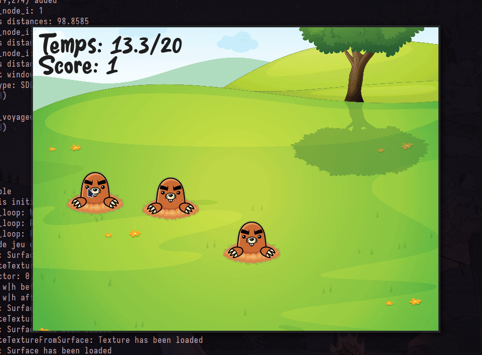